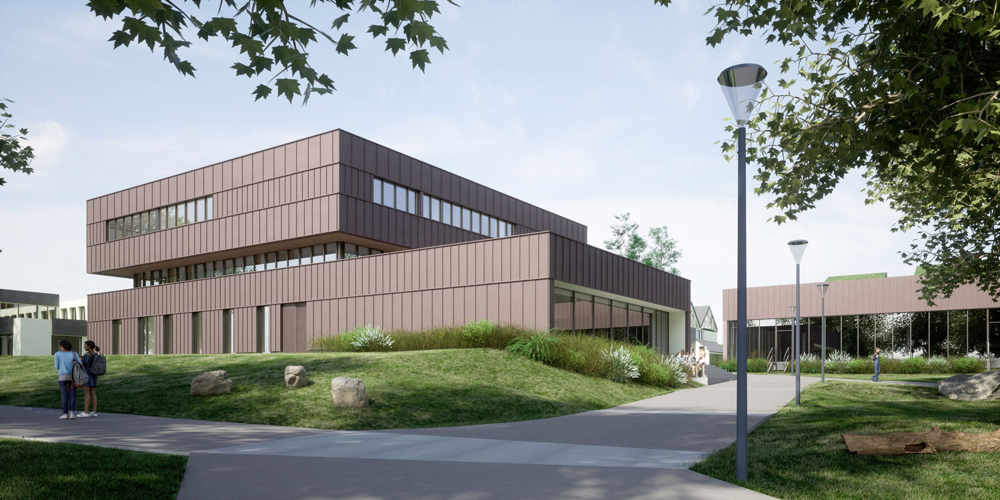

J'ai obtenu mon Baccalauréat Général en 2025 avec la mention Assez Bien, au lycée Benjamin Franklin à Auray. Passionné par les sciences et la logique, j'avais choisi les spécialités Mathématiques et Numérique et Sciences Informatiques (18 et 20 au bac). Ce cursus m'a permis d'acquérir des bases solides en algorithmique et en résolution de problèmes, confirmant mon envie de m'orienter vers l'ingénierie.
J'ai intégré l'ENSIBS (École Nationale Supérieure d'Ingénieurs de Bretagne-Sud) en septembre 2025 avec un objectif clair : devenir ingénieur en Génie Énergétique. Actuellement en première année de cycle préparatoire intégré, je m'investis pleinement dans ma réussite académique. J'ai validé l'ensemble de mes modules avec d'excellents résultats, ce qui m'a permis de me classer 5ème de ma promotion.
Si vous souhaitez avoir une vision plus détaillée de mon parcours académique, de mes projets et de mes compétences techniques, je vous invite à consulter mon CV. Ce document, mis à jour régulièrement, synthétise mes expériences et mon savoir-faire.
Télécharger mon CV